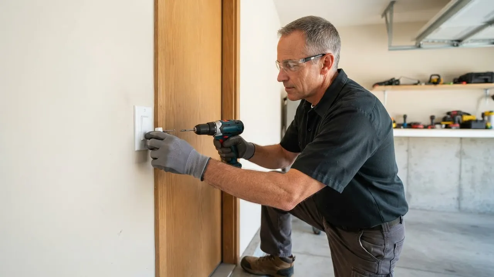

Garage Door Cable Repair
Garage Door Cable Repair Wilmington DE Done Right the First Time
When a cable snaps, your door drops crooked and stays stuck. Our Garage Door Cable Repair Wilmington DE crews replace snapped, frayed, and rusted cables on torsion and extension systems the same day, usually within hours of your call. We serve homeowners and businesses across New Castle County, from Downtown Wilmington to Brandywine Village, and we carry galvanized steel cables on every truck.
Service overview
What Garage Door Cable Repair Wilmington DE Actually Involves
Garage Door Cable Repair Wilmington DE is the trade of replacing the steel lift cables that spool around the drums at each end of your door's torsion shaft, or the cables that run along extension springs on older setups. Those cables carry the full dead weight of the door, often 130 to 300 pounds. When one frays or snaps, the door hangs at an angle, binds in the track, and can drop without warning. We cut out the failed cable, inspect the drum and spring for damage, and install a matched pair of galvanized steel cables rated for your door's weight.
Most Wilmington cables fail for the same three reasons: age, rust, and a door that has been running out of balance for months. Salt air off the Christina River, damp garages in Southbridge and Hedgeville, and freeze-thaw cycles along the Brandywine all speed up corrosion. If you have been searching for garage door cable repair Wilmington DE near me after hearing a loud bang from the garage, that bang was almost certainly a snapped cable or a broken torsion spring. We diagnose both in one visit.

Practical benefits
Why Wilmington Homeowners Call Us First
A snapped cable is not a wait-and-see problem. Here is what you get when you book cable repair with us instead of letting the door sit crooked for another week.
Same-Day Cable Service
We run same-day garage door cable repair Wilmington DE appointments six days a week, and we keep 24/7 emergency slots open for doors stuck open or jammed halfway. Most calls in the 19806 and 19809 ZIPs get a tech on site within two to four hours.
Cables Replaced in Pairs
If one cable snapped, the other one is the same age and under the same load. We replace both galvanized steel cables at once so you are not paying a second service call three months later when the twin lets go.
Full Safety Inspection
Every cable job includes a check of the torsion springs, cable drums, nylon rollers, hinges, and track brackets. We torque bolts to spec and flag anything that will fail next, so you know exactly where your door stands.
Upfront Pricing, No Surprises
You get the price before we start. No diagnostic fee games, no parts markup sprung on you at the end. If a spring is also broken, we tell you what that adds and let you decide on the spot.
How service works
How Our Cable Repair Process Works
From your first call to the final test cycle, here is exactly what happens when you book cable work with us. No guesswork, no waiting around all day for a window that never comes.
STEP 01
Phone Diagnosis
Call (302) 556-5080 and describe what you heard and saw. A bang, a crooked door, or a cable hanging loose all point to specific failures. We ask a few quick questions, give you a ballpark range, and book the visit, usually the same day.
Tools and methods
Tools and Standards We Work To
Winding Bars
Solid steel bars used to safely add or release tension on torsion springs. Never substitute a screwdriver or a piece of rebar; that is how people get hurt.
C-Clamps and Vise Grips
Lock the door and torsion shaft in place before any cable or spring work begins, so nothing moves while we are under tension.
Socket Wrench Set
Used to torque bottom brackets, drum set screws, and bearing plates to spec so cables stay seated on the drums.
Power Drill
Speeds up bracket and hardware swaps and lets us pre-drill clean holes when replacing damaged mounting points.
Tape Measure and Level
Cables are cut to your door's exact height, and the door is checked for level at the halfway point to confirm proper balance.
Safety Glasses
Non-negotiable on every cable and spring job. High-tension hardware can release suddenly, and eye protection is the first line of defense.
Rubber Mallet
Used to seat drums, brackets, and rollers without marring the door's finish or denting panels.
UL 325 Safety Compliance
Every door we touch gets its safety reverse tested against a 2x4 block before we leave. This is the standard that keeps a closing door from crushing a child or pet, and we do not skip it.
Pair Replacement
We replace cables in matched pairs, never one at a time. Two cables installed the same day wear at the same rate, which prevents the second failure that catches homeowners off guard.
Balance Testing
After cable work, we disconnect the opener and lift the door to the halfway point. A properly balanced door stays put. If it drifts, the springs need adjustment and we make it before we finish.
Drum and Bracket Inspection
New cables on a grooved drum or a bent bracket will fail early. We inspect and replace those parts as needed so the repair actually lasts its full service life.

Where this service fits
When to Book Cable Repair
You heard a bang and the door is stuck half open with your car inside.
Call our 24/7 line. We treat stuck-open and jammed doors as emergency calls, clamp the door safely, and replace the failed cable the same day, including evenings and weekends. Your car is freed, the door is safe, and you are not waiting until Monday for a fix.
Your door has been running rough for weeks and you spot a frayed cable on one drum.
Book a same-day cable replacement before it snaps. We replace both cables, check the drums and springs, and rebalance the door in about 90 minutes. You avoid an emergency call, a possible off-track repair, and a bigger bill.
You are selling a Wilmington row house and the home inspection flagged a worn cable.
We inspect the full system, replace the cable pair, and provide a written summary of the work so your buyer's inspector can see it was done right. The deal moves forward with one less repair on the punch list.
A rental property cable snapped and the tenant cannot get their car out.
We prioritize tenant-occupied calls, coordinate access directly with the tenant, and send photos of the completed work so you can approve from anywhere. The tenant is mobile again and you have documentation for your records.
Local execution
How Cable Repair Runs in Wilmington
Wilmington garages deal with a specific mix of conditions that wear cables faster than you would see in drier climates. Damp air off the Christina River and the Brandywine, plus winter freeze-thaw cycles, corrodes galvanized steel from the inside out. Older neighborhoods like Forty Acres, Wawaset Park, and The Highlands are full of detached and semi-detached garages built in the 1920s through the 1950s, many with original extension-spring setups that were never designed for today's heavier insulated doors. When we get a call for broken garage door cable Wilmington, we usually find a door that has been running out of balance for months, one cable doing most of the work, and a drum that has started to groove. We stock cables, drums, and rollers on every truck, so most jobs finish in one visit. If you are searching for emergency garage door cable repair Wilmington DE on a Sunday night, we keep 24/7 slots open for doors stuck open or blocking a car.
Forty Acres
Many homes here have narrow single-car garages with original hardware. Cable lengths are often non-standard, so we cut new cables on site to fit.
Trolley Square
Row house garages with tight clearances. We work carefully around shared walls and low ceilings, and we keep the work area clean.
The Highlands
Larger detached garages with heavier doors. These put more load on cables and springs, so we check balance and drum condition closely.
Southbridge
Damp, low-lying lots near the river. Cables here rust fast, and we often find corrosion inside the strands even when the outside looks fine.
Brandywine Village
Historic homes with character garages. We match hardware to the door's age and avoid modern parts that would look out of place.
Winter freeze-thaw cycles along the Brandywine
Moisture gets into the cable strands, freezes, and expands, which breaks strands from the inside. Cables that look fine in fall can snap by February.
Summer humidity and river damp
High humidity in July and August speeds rust on cables, drums, and springs. Annual lubrication and a quick cable check in spring go a long way.
Older extension-spring garages
Many Wilmington homes still run extension springs, which use a different cable setup than torsion systems. We carry parts for both and know the difference on sight.
Street parking and tight driveways
When a door is stuck, your car is trapped. We prioritize stuck-door calls so you are not stranded, and we work fast to get you moving.
Problems we solve
Cable Problems We Fix Every Week
Cable failures show up in a handful of ways, and each one points to a different fix. Here is what we see most often on Wilmington doors and how we handle it.
Door hanging crooked with one side down
We clamp the door, release tension, and replace both cables plus any damaged drum or bracket. The door gets rebalanced and tested through full cycles before we leave. The door binds in the track, the opener strains, and the remaining cable is carrying double load. Running it like this can drop the door or strip the opener gears.
Loud bang from the garage, door will not move
We diagnose on site, replace the failed cable or spring, and check the other side for matching wear. Most of these calls finish in one visit with parts from the truck. That bang is usually a snapped cable or a broken torsion spring. The door is dead weight and unsafe to lift by hand. The opener will burn out if you keep hitting the button.
Frayed cable visible on the drum
We replace the frayed cable and its pair before it fails, inspect the drum for grooves, and rebalance the door. This is the cheapest cable call you can make. A frayed cable is a cable about to snap. Once strands start breaking, the rest go fast, often within days. Catching it early saves you a bigger repair.
Door comes off track after a cable break
We replace the cables, reset the rollers, straighten or replace bent track sections, and realign the verticals. The door runs true again in one appointment. When one side drops, the rollers can pop out of the track and the door can jam or fall. This is a two-problem repair: cable plus track.

A practical standard for every visit.
Clear planningPrepared arrivalsCareful workLocal follow-through
Experience in the details
16 Years of Cable Work in Delaware
Delaware Express Garage Door Service has been repairing and installing garage doors since 2010, which puts us at 16 years serving Wilmington and the surrounding New Castle County area. Our technicians are trained on torsion and extension systems from LiftMaster, Chamberlain, Genie, Craftsman, Linear, Marantec, and Sommer, and we work on doors from Clopay, Amarr, and Wayne Dalton every week. We follow UL 325 safety standards on every job and hold a Delaware contractor license. Cable work is one of the most dangerous repairs a homeowner can attempt, and we treat it that way: winding bars, C-clamps, and safety glasses on every call.
- 16 years in business, founded in 2010 in Wilmington, Delaware
- Delaware contractor license held and current
- Trained on LiftMaster, Chamberlain, Genie, and Craftsman systems
- UL 325 safety compliance on every door we touch
- Thousands of cable, spring, and drum jobs completed across New Castle County

Where we work
One local team. A lot of ground covered.
Downtown WilmingtonRiverfrontThe HighlandsTrolley SquareForty AcresBaynard VillageWawaset ParkCool SpringTrinity VicinityBrowntownLittle ItalyUnion Park Gardens
Check my address Notes from local customers
What Wilmington Customers Say
Heard a bang from the garage on a Tuesday morning and the door was hanging crooked by lunch. Called these guys and a tech was out by 2 p.m. He replaced both cables, checked the springs, and had the door running smooth in about an hour. Price was exactly what he quoted on the phone. No surprises.
Our 1920s garage has a narrow door and I was worried nobody would have the right cable length. The tech measured, cut new galvanized cables on site, and even replaced a grooved drum he found. Door has been quiet for six months now. Good local outfit.
One of our rental units had a cable snap and the tenant was stuck. They came out same day, fixed the cable, and also caught a worn roller that would have failed next month. Fair price, clean work, and they sent photos of everything they did. I use them for all our Wilmington properties now.
Most cable jobs in Wilmington run $180 to $450 in 2026, including parts and labor for both cables. Single-cable replacements on simple doors can land closer to $150, while a door that also needs a drum or spring pushes the total higher. We quote before we start, so you know the number up front.
The usual causes are age, rust, and an unbalanced door. Cables in Wilmington garages deal with damp air and winter freeze-thaw, which corrodes the strands from the inside. A door that has been running heavy on one side wears its cables fast. Once one strand frays, the rest go quickly, and the cable snaps under load.
Yes. We run same-day garage door cable repair Wilmington DE appointments six days a week and keep 24/7 emergency slots for doors stuck open or blocking a car. Call (302) 556-5080 before early afternoon and we can usually be on site within a few hours, including the 19801, 19805, and 19802 ZIPs.
Yes. A door with one snapped cable is hanging on a single cable and the springs, and it can drop or come off track without warning. Do not run the opener and do not try to lift the door by hand. Keep kids and pets clear and call us for emergency garage door cable repair Wilmington DE.
Keep exploring
Other Garage Door Services We Handle
Your next step is waiting
Need Garage Door Cable Repair Wilmington DE Today?
A snapped cable leaves your door unsafe and your car trapped. Call (302) 556-5080 and we will get a licensed tech to your door, usually the same day, with upfront pricing and a workmanship warranty on every repair.
Start with the basics
Call For Garage Door Service
Call (302) 556-5080 and tell us what your door is doing. We answer during business hours and run emergency calls after hours. Most days we can get a tech to you the same day, and we will give you a window, not a maybe.